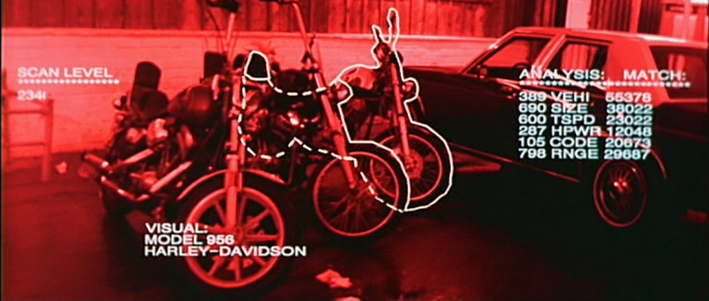
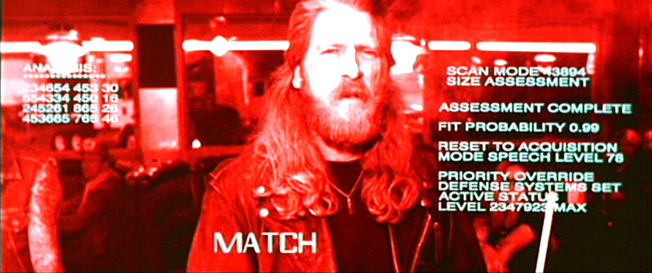
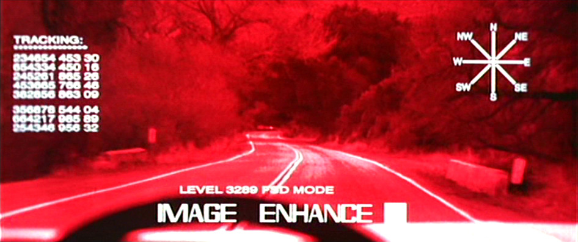
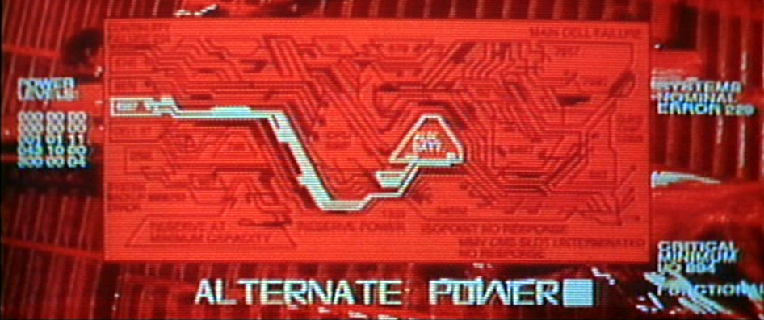

T-800 scans for vehicles

T-800 finds suitable clothing

T-800 IDs a mission priority

T-800 in night driving mode

T-800 determines casualties

T-800 calculates threats

T-800 bootup screen

T-800 finding alternate power

T-800's shutdown screen